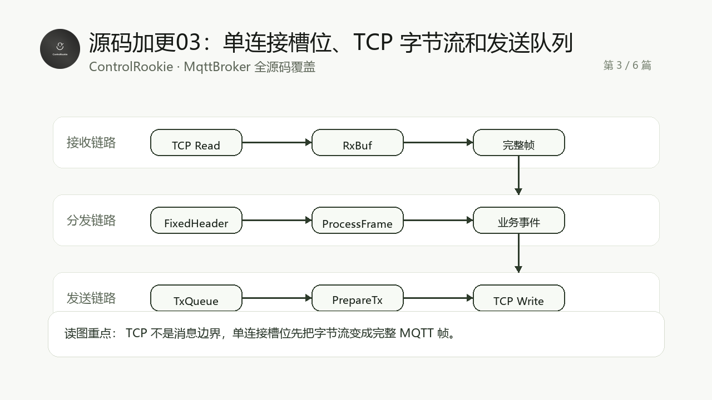

这一组源码加更只有一个目标：把 MqttBroker 的真实 ST 源码按工程阅读顺序讲完整。不是再补几段“看起来像源码”的片段，而是让读者能沿着源码对象理解这个 Broker 怎么组织、怎么运行、怎么排障。
适合谁收藏
- 已经读过 MqttBroker 主线教程，想继续看真实源码实现的工程师。
- 想学习 CodeSys ST 工程如何拆分 Broker、连接池、编解码、路由和 QoS 调度的人。
- 想把 MQTT Broker 移植到 PLC、边缘控制器或教学工程里的开发者。

先给结论
这一篇看一个客户端连接进入 Broker 后，如何在单连接槽位里完成收帧、验头、分发、排队和发送准备。
TCP 收到的是字节流，不是 MQTT 消息。现场很多 Broker 不稳定，本质不是 MQTT 理论没懂，而是完整帧、半包、粘包和发送队列边界没处理清楚。
这篇覆盖 14 个源码文件，合计约 1227 行 ST 代码。为了保持公开教程可读性，正文先讲源码阅读路径，再给完整源码。读代码时建议不要从第一个代码块一路机械读到底，而是按本篇的“读代码顺序”来抓主线。
从工程问题到代码职责
| 层次 | 本篇重点 | 你读源码时要抓住的判断 |
|---|---|---|
| 工程入口 | 程序如何启动、对象如何被实例化 | 先确认谁是入口，谁只是被调度的对象 |
| 数据边界 | 容量、状态、错误、缓冲区和表结构 | 先知道边界，后面排障才不会乱猜 |
| 协作关系 | 各 FB、函数和结构体如何互相传递数据 | 不按文件夹读，按数据流和状态流读 |
| 验证路径 | 在线观察应该看哪些变量 | 代码最终要能落到现场排障，而不是只停在源码阅读 |
本篇源码覆盖表
| 序号 | 源码对象 | 行数 |
|---|---|---|
| 1 | FB_MqttBrokerConnection.M_AssignPacketId.st | 32 |
| 2 | FB_MqttBrokerConnection.M_Attach.st | 39 |
| 3 | FB_MqttBrokerConnection.M_ConsumeFrame.st | 42 |
| 4 | FB_MqttBrokerConnection.M_EnqueueDelivery.st | 108 |
| 5 | FB_MqttBrokerConnection.M_EnqueueProtocolAck.st | 39 |
| 6 | FB_MqttBrokerConnection.M_EnqueueProtocolAckList.st | 58 |
| 7 | FB_MqttBrokerConnection.M_HasCompleteFrame.st | 68 |
| 8 | FB_MqttBrokerConnection.M_PrepareNextTx.st | 154 |
| 9 | FB_MqttBrokerConnection.M_ProcessFrame.st | 220 |
| 10 | FB_MqttBrokerConnection.M_RequestDisconnect.st | 14 |
| 11 | FB_MqttBrokerConnection.M_Reset.st | 92 |
| 12 | FB_MqttBrokerConnection.M_SetAuthenticated.st | 14 |
| 13 | FB_MqttBrokerConnection.M_ValidateFixedHeader.st | 75 |
| 14 | FB_MqttBrokerConnection.st | 272 |
推荐阅读顺序
- 先看连接槽位主体
FB_MqttBrokerConnection.st。 - 再看 Attach/Reset/RequestDisconnect 等生命周期方法。
- 最后看 HasCompleteFrame、ConsumeFrame、ProcessFrame 和发送队列方法。
验证和排障边界
- 用多个客户端高频发布，重点观察是否丢帧、粘包误判或发送队列积压。
- 如果出现延迟或掉线，先查连接槽位，不要先怀疑主题路由。
本篇完整开源代码
下面代码来自对应 .st 源文件的连续完整内容。为方便公开阅读，只保留源码对象名，不放本机工程路径。
完整代码 01: FB_MqttBrokerConnection.M_AssignPacketId.st
iecst
/// =======================================================================
/// 名称 : M_AssignPacketId
/// 功能 : 为出站 QoS>0 发布帧分配 Packet Identifier
/// 说明 : PacketId 按连接维度递增，0 为 MQTT 保留值，自动跳过。
/// 编程人员 : ControlRookie
/// 时间 : 2026-05-08
/// 版本 : V1.0
/// =======================================================================
{attribute 'hide_all_locals'}
METHOD M_AssignPacketId : BOOL
VAR_IN_OUT
stPublish : ST_MqttBrokerPublishFrame; // 需要分配 PacketId 的出站发布帧
END_VAR
// === IMPLEMENTATION ===
IF stPublish.eQoS = E_MqttQoS.byQoS0 THEN
M_AssignPacketId := TRUE;
RETURN;
END_IF
IF stConnection.uiNextPacketId = 0 THEN
stConnection.uiNextPacketId := 1;
END_IF
stPublish.uiPacketId := stConnection.uiNextPacketId;
stConnection.uiNextPacketId := stConnection.uiNextPacketId + 1;
IF stConnection.uiNextPacketId = 0 THEN
stConnection.uiNextPacketId := 1;
END_IF
M_AssignPacketId := TRUE;完整代码 02: FB_MqttBrokerConnection.M_Attach.st
iecst
/// =======================================================================
/// 名称 : M_Attach
/// 功能 : 把 TCP 连接句柄绑定到当前槽位
/// 说明 : 监听层接受新连接后调用，连接进入等待 MQTT CONNECT 状态。
/// 编程人员 : ControlRookie
/// 时间 : 2026-05-08
/// 版本 : V1.0
/// =======================================================================
{attribute 'hide_all_locals'}
METHOD M_Attach : BOOL
VAR_INPUT
hConnection : NBS.CAA.HANDLE; // 新接入客户端的 TCP 连接句柄
END_VAR
// === IMPLEMENTATION ===
M_Reset();
IF hConnection = 0 THEN
eLastError := E_MqttBrokerError.uiTcpAcceptFailed;
M_Attach := FALSE;
RETURN;
END_IF
stConnection.xUsed := TRUE;
stConnection.xMqttConnected := FALSE;
stConnection.xCleanSession := TRUE;
stConnection.xDisconnectRequested := FALSE;
stConnection.xGracefulDisconnect := FALSE;
stConnection.eState := E_MqttConnectionState.iWaitConnect;
stConnection.eLastError := E_MqttBrokerError.uiNoError;
stConnection.hConnection := hConnection;
stConnection.uiSlot := uiSlot;
stConnection.uiKeepAlive := GVL_MqttBroker.cnDefaultKeepAlive;
stConnection.udiLastActivityMs := udiNowMs;
stConnection.udiLastTcpActiveMs := udiNowMs;
stConnection.udiConnectedAtMs := 0;
stConnection.uiNextPacketId := 1;
eLastError := E_MqttBrokerError.uiNoError;
M_Attach := TRUE;完整代码 03: FB_MqttBrokerConnection.M_ConsumeFrame.st
iecst
/// =======================================================================
/// 名称 : M_ConsumeFrame
/// 功能 : 从接收缓冲区移除已处理 MQTT 报文
/// 说明 : 支持粘包场景，处理完一包后把剩余字节前移。
/// 编程人员 : ControlRookie
/// 时间 : 2026-05-08
/// 版本 : V1.0
/// =======================================================================
{attribute 'hide_all_locals'}
METHOD M_ConsumeFrame : BOOL
VAR_INPUT
uiFrameLen : UINT; // 已处理的完整 MQTT 报文长度[byte]
END_VAR
VAR
uiIndex : UINT; // 缓冲区前移复制索引[byte]
uiRemain : UINT; // 消费后仍留在接收缓冲区的字节数[byte]
END_VAR
// === IMPLEMENTATION ===
IF uiFrameLen = 0 THEN
M_ConsumeFrame := FALSE;
RETURN;
END_IF
IF uiFrameLen > stConnection.uiRxLength THEN
eLastError := E_MqttBrokerError.uiProtocolMalformed;
M_ConsumeFrame := FALSE;
RETURN;
END_IF
uiRemain := stConnection.uiRxLength - uiFrameLen;
IF uiRemain > 0 THEN
uiIndex := 0;
WHILE uiIndex < uiRemain DO
aRxBuf[uiIndex] := aRxBuf[uiFrameLen + uiIndex];
uiIndex := uiIndex + 1;
END_WHILE
END_IF
stConnection.uiRxLength := uiRemain;
M_ConsumeFrame := TRUE;完整代码 04: FB_MqttBrokerConnection.M_EnqueueDelivery.st
iecst
/// =======================================================================
/// 名称 : M_EnqueueDelivery
/// 功能 : 将普通 PUBLISH 投递任务写入连接队列
/// 说明 : 路由层匹配订阅后调用，本队列低于协议响应队列优先级。
/// 编程人员 : ControlRookie
/// 时间 : 2026-05-08
/// 版本 : V1.0
/// =======================================================================
{attribute 'hide_all_locals'}
METHOD M_EnqueueDelivery : BOOL
VAR_IN_OUT
stDelivery : ST_MqttBrokerPublishFrame; // 需要投递给当前客户端的发布帧，QoS>0 且 PacketId 为 0 时会被分配编号
END_VAR
VAR
uiIndex : UINT; // 普通投递队列扫描索引[1..cnDeliveryQueueSize]
uiReadIndex : UINT; // 队列紧凑时读取旧队列项的索引[1..cnDeliveryQueueSize]
uiWriteIndex : UINT; // 队列紧凑时写入新队列项的索引[1..cnDeliveryQueueSize]
uiInsertIndex : UINT; // 本次新投递应写入的队尾索引，0 表示暂未找到可用尾部[1..cnDeliveryQueueSize]
END_VAR
// === IMPLEMENTATION ===
IF NOT stDelivery.xValid THEN
M_EnqueueDelivery := FALSE;
RETURN;
END_IF
IF stConnection.uiDeliveryQueueCount >= GVL_MqttBroker.cnDeliveryQueueHighWater THEN
IF stDelivery.eQoS = E_MqttQoS.byQoS0 THEN
eLastError := E_MqttBrokerError.uiQueueFull;
IF udiTxQueueFullDropped < UDINT#16#FFFFFFFF THEN
udiTxQueueFullDropped := udiTxQueueFullDropped + 1;
END_IF
M_EnqueueDelivery := FALSE;
RETURN;
END_IF
END_IF
IF stDelivery.uiTargetSlot <> uiSlot THEN
M_EnqueueDelivery := FALSE;
RETURN;
END_IF
uiInsertIndex := 0;
/// 队列发送端按低索引优先取帧，因此入队不能简单找第一个空洞。
/// 否则低位旧帧刚被发走、高位旧帧尚未发完时，新帧会插到旧尾部前面，现场表现就是后发消息穿插到前发消息尾部之前。
/// 这里先寻找当前有效队尾，把新消息追加到队尾之后；若尾部已顶到数组上限但中间存在空洞，则先做一次稳定紧凑。
FOR uiIndex := 1 TO GVL_MqttBroker.cnDeliveryQueueSize DO
IF aDeliveryQueue[uiIndex].xValid THEN
IF uiIndex < GVL_MqttBroker.cnDeliveryQueueSize THEN
uiInsertIndex := uiIndex + 1;
ELSE
uiInsertIndex := 0;
END_IF
END_IF
END_FOR
IF stConnection.uiDeliveryQueueCount = 0 THEN
uiInsertIndex := 1;
ELSIF uiInsertIndex = 0 THEN
uiWriteIndex := 1;
FOR uiReadIndex := 1 TO GVL_MqttBroker.cnDeliveryQueueSize DO
IF aDeliveryQueue[uiReadIndex].xValid THEN
IF uiReadIndex <> uiWriteIndex THEN
aDeliveryQueue[uiWriteIndex] := aDeliveryQueue[uiReadIndex];
aDeliveryQueue[uiReadIndex].xValid := FALSE;
END_IF
IF uiWriteIndex < GVL_MqttBroker.cnDeliveryQueueSize THEN
uiWriteIndex := uiWriteIndex + 1;
END_IF
END_IF
END_FOR
IF stConnection.uiDeliveryQueueCount < GVL_MqttBroker.cnDeliveryQueueSize THEN
uiInsertIndex := stConnection.uiDeliveryQueueCount + 1;
END_IF
END_IF
IF (uiInsertIndex >= 1) AND (uiInsertIndex <= GVL_MqttBroker.cnDeliveryQueueSize) THEN
IF stDelivery.eQoS = E_MqttQoS.byQoS0 THEN
stDelivery.uiPacketId := 0;
ELSIF stDelivery.uiPacketId = 0 THEN
// Packet Identifier 的作用域是单条 MQTT 客户端连接。
// 入站 PUBLISH 的 PacketId 属于发布者连接，不能直接转发给订阅者；
// 首次投递给订阅者时必须在自己的连接内重新分配 PacketId，避免 QoS1/QoS2 确认链路冲突。
M_AssignPacketId(stPublish := stDelivery);
ELSE
// QoS 重发必须沿用首次投递的 PacketId。
// 如果重发时重新分配 PacketId，客户端会 PUBACK 新编号，而事务表仍等待旧编号，
// 结果就是每 2 秒重复投递一次，达到最大重试次数后 Broker 主动断开客户端。
END_IF
aDeliveryQueue[uiInsertIndex] := stDelivery;
stConnection.uiDeliveryQueueCount := stConnection.uiDeliveryQueueCount + 1;
IF stConnection.uiDeliveryQueueCount > uiMaxDeliveryQueueCountSeen THEN
uiMaxDeliveryQueueCountSeen := stConnection.uiDeliveryQueueCount;
END_IF
M_EnqueueDelivery := TRUE;
RETURN;
END_IF
eLastError := E_MqttBrokerError.uiQueueFull;
IF stDelivery.eQoS = E_MqttQoS.byQoS0 THEN
IF udiTxQueueFullDropped < UDINT#16#FFFFFFFF THEN
udiTxQueueFullDropped := udiTxQueueFullDropped + 1;
END_IF
END_IF
M_EnqueueDelivery := FALSE;完整代码 05: FB_MqttBrokerConnection.M_EnqueueProtocolAck.st
iecst
/// =======================================================================
/// 名称 : M_EnqueueProtocolAck
/// 功能 : 将协议响应写入优先队列
/// 说明 : 协议响应优先于普通 PUBLISH 投递，避免 ACK 被慢业务流量阻塞。
/// 编程人员 : ControlRookie
/// 时间 : 2026-05-08
/// 版本 : V1.0
/// =======================================================================
{attribute 'hide_all_locals'}
METHOD M_EnqueueProtocolAck : BOOL
VAR_INPUT
ePacketType : E_MqttPacketType; // 需要发送的 MQTT 协议响应类型
uiPacketId : UINT; // 响应关联 Packet Identifier，无需时为 0
byReturnCode : BYTE; // CONNACK/SUBACK 返回码，其他响应为 0
END_VAR
VAR
uiIndex : UINT; // 协议响应队列扫描索引
END_VAR
// === IMPLEMENTATION ===
FOR uiIndex := 1 TO GVL_MqttBroker.cnProtocolQueueSize DO
IF NOT aProtocolQueue[uiIndex].xUsed THEN
aProtocolQueue[uiIndex].xUsed := TRUE;
aProtocolQueue[uiIndex].ePacketType := ePacketType;
aProtocolQueue[uiIndex].uiPacketId := uiPacketId;
aProtocolQueue[uiIndex].byReturnCode := byReturnCode;
aProtocolQueue[uiIndex].uiReturnCount := 0;
stConnection.uiProtocolQueueCount := stConnection.uiProtocolQueueCount + 1;
IF stConnection.uiProtocolQueueCount > uiMaxProtocolQueueCountSeen THEN
uiMaxProtocolQueueCountSeen := stConnection.uiProtocolQueueCount;
END_IF
M_EnqueueProtocolAck := TRUE;
RETURN;
END_IF
END_FOR
eLastError := E_MqttBrokerError.uiQueueFull;
stConnection.xDisconnectRequested := TRUE;
M_EnqueueProtocolAck := FALSE;完整代码 06: FB_MqttBrokerConnection.M_EnqueueProtocolAckList.st
iecst
/// =======================================================================
/// 名称 : M_EnqueueProtocolAckList
/// 功能 : 将带多返回码的协议响应写入优先队列
/// 说明 : 主要用于多 Topic SUBSCRIBE 的 SUBACK，保证每个 Topic 都有独立返回码。
/// 编程人员 : ControlRookie
/// 时间 : 2026-05-08
/// 版本 : V1.0
/// =======================================================================
{attribute 'hide_all_locals'}
METHOD M_EnqueueProtocolAckList : BOOL
VAR_INPUT
ePacketType : E_MqttPacketType; // 需要发送的 MQTT 协议响应类型，当前主要为 SUBACK
uiPacketId : UINT; // 响应关联 Packet Identifier
uiReturnCount : UINT; // 多 Topic 返回码数量[条]
END_VAR
VAR_IN_OUT
aReturnCodes : ARRAY[*] OF BYTE; // 多 Topic 返回码数组，每个元素对应一个 Topic Filter
END_VAR
VAR
uiIndex : UINT; // 协议响应队列扫描索引
uiCodeIndex : UINT; // 返回码复制索引[1..cnMaxTopicItemsPerPacket]
END_VAR
// === IMPLEMENTATION ===
IF uiReturnCount = 0 THEN
M_EnqueueProtocolAckList := FALSE;
RETURN;
END_IF
IF uiReturnCount > GVL_MqttBroker.cnMaxTopicItemsPerPacket THEN
M_EnqueueProtocolAckList := FALSE;
RETURN;
END_IF
FOR uiIndex := 1 TO GVL_MqttBroker.cnProtocolQueueSize DO
IF NOT aProtocolQueue[uiIndex].xUsed THEN
aProtocolQueue[uiIndex].xUsed := TRUE;
aProtocolQueue[uiIndex].ePacketType := ePacketType;
aProtocolQueue[uiIndex].uiPacketId := uiPacketId;
aProtocolQueue[uiIndex].byReturnCode := 0;
aProtocolQueue[uiIndex].uiReturnCount := uiReturnCount;
FOR uiCodeIndex := 1 TO uiReturnCount DO
aProtocolQueue[uiIndex].aReturnCodes[uiCodeIndex] := aReturnCodes[uiCodeIndex];
END_FOR
stConnection.uiProtocolQueueCount := stConnection.uiProtocolQueueCount + 1;
IF stConnection.uiProtocolQueueCount > uiMaxProtocolQueueCountSeen THEN
uiMaxProtocolQueueCountSeen := stConnection.uiProtocolQueueCount;
END_IF
M_EnqueueProtocolAckList := TRUE;
RETURN;
END_IF
END_FOR
eLastError := E_MqttBrokerError.uiQueueFull;
stConnection.xDisconnectRequested := TRUE;
M_EnqueueProtocolAckList := FALSE;完整代码 07: FB_MqttBrokerConnection.M_HasCompleteFrame.st
iecst
/// =======================================================================
/// 名称 : M_HasCompleteFrame
/// 功能 : 判断接收缓冲区是否已有完整 MQTT 报文
/// 说明 : 先解码 Remaining Length，再判断固定头、变长长度和载荷是否完整。
/// 编程人员 : ControlRookie
/// 时间 : 2026-05-08
/// 版本 : V1.0
/// =======================================================================
{attribute 'hide_all_locals'}
METHOD M_HasCompleteFrame : BOOL
VAR_OUTPUT
uiFrameLen : UINT; // 完整 MQTT 报文总长度[byte]
uiBodyOffset : UINT; // 可变头起始偏移[byte]
udiRemainingLen : UDINT; // Remaining Length 解码值[byte]
xNeedMore : BOOL; // TRUE 表示当前缓冲区还不足以形成完整报文
END_VAR
VAR
uiRemainingBytes : UINT; // Remaining Length 字段实际占用字节数[byte]
END_VAR
// === IMPLEMENTATION ===
uiFrameLen := 0;
uiBodyOffset := 0;
udiRemainingLen := 0;
xNeedMore := FALSE;
IF stConnection.uiRxLength < 2 THEN
xNeedMore := TRUE;
M_HasCompleteFrame := FALSE;
RETURN;
END_IF
IF NOT F_MqttDecodeRemainingLength(
aBuffer := aRxBuf,
uiStartIndex := 1,
uiBufferLen := stConnection.uiRxLength,
udiValue => udiRemainingLen,
uiBytesUsed => uiRemainingBytes,
xNeedMore => xNeedMore) THEN
M_HasCompleteFrame := FALSE;
RETURN;
END_IF
IF udiRemainingLen > GVL_MqttBroker.cnMqttRemainingLengthMax THEN
eLastError := E_MqttBrokerError.uiProtocolMalformed;
stConnection.xDisconnectRequested := TRUE;
M_HasCompleteFrame := FALSE;
RETURN;
END_IF
uiBodyOffset := 1 + uiRemainingBytes;
IF (TO_UDINT(uiBodyOffset) + udiRemainingLen) > TO_UDINT(GVL_MqttBroker.cnRxBufferSize) THEN
eLastError := E_MqttBrokerError.uiPacketTooLarge;
stConnection.xDisconnectRequested := TRUE;
M_HasCompleteFrame := FALSE;
RETURN;
END_IF
uiFrameLen := uiBodyOffset + TO_UINT(udiRemainingLen);
IF stConnection.uiRxLength < uiFrameLen THEN
xNeedMore := TRUE;
M_HasCompleteFrame := FALSE;
RETURN;
END_IF
M_HasCompleteFrame := TRUE;完整代码 08: FB_MqttBrokerConnection.M_PrepareNextTx.st
iecst
/// =======================================================================
/// 名称 : M_PrepareNextTx
/// 功能 : 从发送队列批量取出 MQTT 报文并编码到发送缓冲区
/// 说明 : 一次 TCP_Write 可以携带多个 MQTT 控制报文帧，显著降低高频小消息的尾部排队延迟。
/// 编程人员 : ControlRookie
/// 时间 : 2026-05-08
/// 版本 : V1.1
/// =======================================================================
{attribute 'hide_all_locals'}
METHOD M_PrepareNextTx : BOOL
VAR
uiIndex : UINT; // 队列扫描索引，协议响应队列和普通投递队列共用[1..容量]
uiBuiltLen : UINT; // 当前单帧编码器构建出的 MQTT 报文长度[byte]
uiTxOffset : UINT; // 本批次下一帧应写入 aTxBuf 的起始偏移[byte]
uiBatchFrameCount : UINT; // 本批次已经成功合并到 aTxBuf 的 MQTT 帧数量[帧]
stDelivery : ST_MqttBrokerPublishFrame; // 从普通投递队列取出的发布帧副本，避免编码过程中直接改队列项
xStopBatch : BOOL; // TRUE 表示本批次已达到帧数或缓冲区预算，应停止继续取队列
END_VAR
// === IMPLEMENTATION ===
M_PrepareNextTx := FALSE;
IF NOT stConnection.xUsed THEN
RETURN;
END_IF
uiTxOffset := 0;
uiBatchFrameCount := 0;
xStopBatch := FALSE;
/// =======================================================================
/// 协议响应优先批量编码
/// =======================================================================
FOR uiIndex := 1 TO GVL_MqttBroker.cnProtocolQueueSize DO
IF xStopBatch THEN
EXIT;
END_IF
IF aProtocolQueue[uiIndex].xUsed THEN
IF uiBatchFrameCount >= GVL_MqttBroker.cnMaxTxFramesPerWrite THEN
xStopBatch := TRUE;
ELSIF (TO_UDINT(uiTxOffset) + TO_UDINT(GVL_MqttBroker.cnMinTxBufferFree)) >= SIZEOF(aTxBuf) THEN
xStopBatch := TRUE;
ELSIF fbCodec.M_BuildSimpleAck(
aBuffer := aTxBuf,
aReturnCodes := aProtocolQueue[uiIndex].aReturnCodes,
ePacketType := aProtocolQueue[uiIndex].ePacketType,
byProtocolLevel := stConnection.byProtocolLevel,
uiPacketId := aProtocolQueue[uiIndex].uiPacketId,
byReturnCode := aProtocolQueue[uiIndex].byReturnCode,
uiReturnCount := aProtocolQueue[uiIndex].uiReturnCount,
uiWriteOffset := uiTxOffset,
udiBufferSize := SIZEOF(aTxBuf),
uiFrameLen => uiBuiltLen) THEN
aProtocolQueue[uiIndex].xUsed := FALSE;
aProtocolQueue[uiIndex].ePacketType := E_MqttPacketType.byReserved;
aProtocolQueue[uiIndex].uiPacketId := 0;
aProtocolQueue[uiIndex].byReturnCode := 0;
aProtocolQueue[uiIndex].uiReturnCount := 0;
IF stConnection.uiProtocolQueueCount > 0 THEN
stConnection.uiProtocolQueueCount := stConnection.uiProtocolQueueCount - 1;
END_IF
uiTxOffset := uiTxOffset + uiBuiltLen;
uiBatchFrameCount := uiBatchFrameCount + 1;
ELSIF uiBatchFrameCount > 0 THEN
// 已经成功编码过前序帧时，构建失败通常表示剩余缓冲不足。
// 此时不清空前序帧，先发送已经打包好的内容，下个周期再处理当前队列项。
xStopBatch := TRUE;
ELSE
// 第一帧就无法构建，说明队列项本身异常或配置缓冲区无法容纳该协议响应。
// 释放该协议响应，避免无效队头永久阻塞后续 ACK/PUBLISH。
aProtocolQueue[uiIndex].xUsed := FALSE;
aProtocolQueue[uiIndex].ePacketType := E_MqttPacketType.byReserved;
aProtocolQueue[uiIndex].uiPacketId := 0;
aProtocolQueue[uiIndex].byReturnCode := 0;
aProtocolQueue[uiIndex].uiReturnCount := 0;
IF stConnection.uiProtocolQueueCount > 0 THEN
stConnection.uiProtocolQueueCount := stConnection.uiProtocolQueueCount - 1;
END_IF
eLastError := E_MqttBrokerError.uiPacketTooLarge;
END_IF
END_IF
END_FOR
/// =======================================================================
/// 普通 PUBLISH 投递批量编码
/// =======================================================================
IF NOT xStopBatch THEN
FOR uiIndex := 1 TO GVL_MqttBroker.cnDeliveryQueueSize DO
IF xStopBatch THEN
EXIT;
END_IF
IF aDeliveryQueue[uiIndex].xValid THEN
IF uiBatchFrameCount >= GVL_MqttBroker.cnMaxTxFramesPerWrite THEN
xStopBatch := TRUE;
ELSIF (TO_UDINT(uiTxOffset) + TO_UDINT(GVL_MqttBroker.cnMinTxBufferFree)) >= SIZEOF(aTxBuf) THEN
xStopBatch := TRUE;
ELSE
stDelivery := aDeliveryQueue[uiIndex];
IF fbCodec.M_BuildPublish(
aBuffer := aTxBuf,
stPublish := stDelivery,
byProtocolLevel := stConnection.byProtocolLevel,
uiWriteOffset := uiTxOffset,
udiBufferSize := SIZEOF(aTxBuf),
uiFrameLen => uiBuiltLen) THEN
aDeliveryQueue[uiIndex].xValid := FALSE;
IF stConnection.uiDeliveryQueueCount > 0 THEN
stConnection.uiDeliveryQueueCount := stConnection.uiDeliveryQueueCount - 1;
END_IF
uiTxOffset := uiTxOffset + uiBuiltLen;
uiBatchFrameCount := uiBatchFrameCount + 1;
ELSIF uiBatchFrameCount > 0 THEN
// 当前 PUBLISH 放不进本批次剩余缓冲时，先发已编码内容，保持队列顺序不变。
xStopBatch := TRUE;
ELSE
// 第一帧就无法构建，多数是 Topic/Payload 超限或队列项被破坏。
// 释放异常项，防止慢性死锁；QoS>0 事务最终会由重试/超时路径处理。
aDeliveryQueue[uiIndex].xValid := FALSE;
IF stConnection.uiDeliveryQueueCount > 0 THEN
stConnection.uiDeliveryQueueCount := stConnection.uiDeliveryQueueCount - 1;
END_IF
eLastError := E_MqttBrokerError.uiPacketTooLarge;
END_IF
END_IF
END_IF
END_FOR
END_IF
IF uiBatchFrameCount > 0 THEN
stConnection.uiTxLength := uiTxOffset;
uiLastTxFrameCount := uiBatchFrameCount;
uiLastTxBytes := uiTxOffset;
IF udiTxBatchCount < UDINT#16#FFFFFFFF THEN
udiTxBatchCount := udiTxBatchCount + 1;
END_IF
IF (UDINT#16#FFFFFFFF - udiTxFrameCount) >= TO_UDINT(uiBatchFrameCount) THEN
udiTxFrameCount := udiTxFrameCount + TO_UDINT(uiBatchFrameCount);
ELSE
udiTxFrameCount := UDINT#16#FFFFFFFF;
END_IF
bTcpWriteExecute := TRUE;
bWriteBusy := TRUE;
M_PrepareNextTx := TRUE;
END_IF完整代码 09: FB_MqttBrokerConnection.M_ProcessFrame.st
iecst
/// =======================================================================
/// 名称 : M_ProcessFrame
/// 功能 : 处理一条完整 MQTT 入站报文
/// 说明 : 连接槽位只解析协议并产出事件，订阅表、路由和事务由顶层协调。
/// 编程人员 : ControlRookie
/// 时间 : 2026-05-08
/// 版本 : V1.0
/// =======================================================================
{attribute 'hide_all_locals'}
METHOD M_ProcessFrame : BOOL
VAR_INPUT
uiFrameLen : UINT; // 当前完整 MQTT 报文总长度[byte]
uiBodyOffset : UINT; // 当前 MQTT 报文可变头起始偏移[byte]
END_VAR
VAR
byPacketClass : BYTE; // 固定头高 4 位控制报文类型，不含低位标志
byReturnCode : BYTE; // CONNACK/SUBACK 返回码
END_VAR
// === IMPLEMENTATION ===
byPacketClass := aRxBuf[0] AND 16#F0;
byReturnCode := 0;
byLastPacketType := byPacketClass;
eLastParseError := E_MqttBrokerError.uiNoError;
IF NOT M_ValidateFixedHeader(uiFrameLen := uiFrameLen, uiBodyOffset := uiBodyOffset) THEN
eLastError := E_MqttBrokerError.uiProtocolMalformed;
eLastParseError := E_MqttBrokerError.uiProtocolMalformed;
stConnection.xDisconnectRequested := TRUE;
M_ProcessFrame := FALSE;
RETURN;
END_IF
CASE byPacketClass OF
16#10:
xLastConnectParsed := FALSE;
IF (uiBodyOffset + 2) >= uiFrameLen THEN
byLastConnectLevel := 0;
ELSIF ((TO_UINT(aRxBuf[uiBodyOffset]) * 256 + TO_UINT(aRxBuf[uiBodyOffset + 1])) = 4)
AND ((uiBodyOffset + 6) < uiFrameLen) THEN
byLastConnectLevel := aRxBuf[uiBodyOffset + 6];
ELSIF ((TO_UINT(aRxBuf[uiBodyOffset]) * 256 + TO_UINT(aRxBuf[uiBodyOffset + 1])) = 6)
AND ((uiBodyOffset + 8) < uiFrameLen) THEN
byLastConnectLevel := aRxBuf[uiBodyOffset + 8];
ELSE
byLastConnectLevel := 0;
END_IF
IF stConnection.xMqttConnected THEN
eLastError := E_MqttBrokerError.uiProtocolMalformed;
eLastParseError := E_MqttBrokerError.uiProtocolMalformed;
stConnection.xDisconnectRequested := TRUE;
ELSIF fbCodec.M_ParseConnect(
aBuffer := aRxBuf,
stConnection := stConnection,
uiBodyOffset := uiBodyOffset,
uiFrameLen := uiFrameLen,
eError => eParseError) THEN
stConnection.xMqttConnected := TRUE;
stConnection.eState := E_MqttConnectionState.iConnected;
stConnection.udiConnectedAtMs := udiNowMs;
stConnection.udiLastActivityMs := udiNowMs;
xMqttConnected := TRUE;
xLastConnectParsed := TRUE;
M_EnqueueProtocolAck(
ePacketType := E_MqttPacketType.byConnAck,
uiPacketId := 0,
byReturnCode := 0);
ELSE
eLastError := eParseError;
eLastParseError := eParseError;
IF stConnection.byProtocolLevel = GVL_MqttBroker.cnMqttProtocolLevel5 THEN
// MQTT 5.0 CONNACK 使用 Reason Code，不再使用 3.1.1 的 1/2/3 返回码。
// 若这里继续返回 1/2/3，部分 5.0 客户端会认为 Broker 响应非法而显示为无原因断开。
IF eParseError = E_MqttBrokerError.uiUnsupportedProtocol THEN
byReturnCode := 16#84;
ELSIF eParseError = E_MqttBrokerError.uiInvalidClientId THEN
byReturnCode := 16#85;
ELSIF eParseError = E_MqttBrokerError.uiProtocolMalformed THEN
byReturnCode := 16#81;
ELSE
byReturnCode := 16#80;
END_IF
ELSE
byReturnCode := 1;
IF eParseError = E_MqttBrokerError.uiUnsupportedProtocol THEN
byReturnCode := 1;
ELSIF eParseError = E_MqttBrokerError.uiInvalidClientId THEN
byReturnCode := 2;
ELSE
byReturnCode := 3;
END_IF
END_IF
M_EnqueueProtocolAck(
ePacketType := E_MqttPacketType.byConnAck,
uiPacketId := 0,
byReturnCode := byReturnCode);
stConnection.xDisconnectRequested := TRUE;
END_IF
16#30:
IF NOT stConnection.xMqttConnected THEN
eLastError := E_MqttBrokerError.uiProtocolMalformed;
eLastParseError := E_MqttBrokerError.uiProtocolMalformed;
stConnection.xDisconnectRequested := TRUE;
ELSIF fbCodec.M_ParsePublish(
aBuffer := aRxBuf,
stPublish := stPublishOut,
uiSourceSlot := uiSlot,
byProtocolLevel := stConnection.byProtocolLevel,
uiBodyOffset := uiBodyOffset,
uiFrameLen := uiFrameLen,
eError => eParseError) THEN
xPublishReady := TRUE;
ELSE
eLastError := eParseError;
eLastParseError := eParseError;
stConnection.xDisconnectRequested := TRUE;
END_IF
16#40:
IF (uiBodyOffset + 1) < uiFrameLen THEN
uiPubAckPacketId := TO_UINT(aRxBuf[uiBodyOffset]) * 256 + TO_UINT(aRxBuf[uiBodyOffset + 1]);
xPubAckReady := TRUE;
ELSE
eLastError := E_MqttBrokerError.uiProtocolMalformed;
eLastParseError := E_MqttBrokerError.uiProtocolMalformed;
stConnection.xDisconnectRequested := TRUE;
END_IF
16#50:
IF (uiBodyOffset + 1) < uiFrameLen THEN
uiPubRecPacketId := TO_UINT(aRxBuf[uiBodyOffset]) * 256 + TO_UINT(aRxBuf[uiBodyOffset + 1]);
xPubRecReady := TRUE;
ELSE
eLastError := E_MqttBrokerError.uiProtocolMalformed;
eLastParseError := E_MqttBrokerError.uiProtocolMalformed;
stConnection.xDisconnectRequested := TRUE;
END_IF
16#60:
IF (uiBodyOffset + 1) < uiFrameLen THEN
uiPubRelPacketId := TO_UINT(aRxBuf[uiBodyOffset]) * 256 + TO_UINT(aRxBuf[uiBodyOffset + 1]);
xPubRelReady := TRUE;
ELSE
eLastError := E_MqttBrokerError.uiProtocolMalformed;
eLastParseError := E_MqttBrokerError.uiProtocolMalformed;
stConnection.xDisconnectRequested := TRUE;
END_IF
16#70:
IF (uiBodyOffset + 1) < uiFrameLen THEN
uiPubCompPacketId := TO_UINT(aRxBuf[uiBodyOffset]) * 256 + TO_UINT(aRxBuf[uiBodyOffset + 1]);
xPubCompReady := TRUE;
ELSE
eLastError := E_MqttBrokerError.uiProtocolMalformed;
eLastParseError := E_MqttBrokerError.uiProtocolMalformed;
stConnection.xDisconnectRequested := TRUE;
END_IF
16#80:
IF fbCodec.M_ParseSubscribe(
aBuffer := aRxBuf,
aTopicItems := aSubItems,
byProtocolLevel := stConnection.byProtocolLevel,
uiBodyOffset := uiBodyOffset,
uiFrameLen := uiFrameLen,
uiPacketId => uiSubPacketId,
uiItemCount => uiSubItemCount,
eError => eParseError) THEN
IF uiSubItemCount > 0 THEN
sSubTopicFilter := aSubItems[1].sTopicFilter;
eSubQoS := aSubItems[1].eQoS;
END_IF
xSubscribeReady := TRUE;
ELSE
eLastError := eParseError;
eLastParseError := eParseError;
M_EnqueueProtocolAck(
ePacketType := E_MqttPacketType.bySubAck,
uiPacketId := uiSubPacketId,
byReturnCode := 16#80);
END_IF
16#A0:
IF fbCodec.M_ParseUnsubscribe(
aBuffer := aRxBuf,
aTopicItems := aUnsubItems,
byProtocolLevel := stConnection.byProtocolLevel,
uiBodyOffset := uiBodyOffset,
uiFrameLen := uiFrameLen,
uiPacketId => uiUnsubPacketId,
uiItemCount => uiUnsubItemCount,
eError => eParseError) THEN
IF uiUnsubItemCount > 0 THEN
sUnsubTopicFilter := aUnsubItems[1].sTopicFilter;
END_IF
xUnsubReady := TRUE;
ELSE
eLastError := eParseError;
eLastParseError := eParseError;
stConnection.xDisconnectRequested := TRUE;
END_IF
16#C0:
M_EnqueueProtocolAck(
ePacketType := E_MqttPacketType.byPingResp,
uiPacketId := 0,
byReturnCode := 0);
16#E0:
stConnection.xGracefulDisconnect := TRUE;
stConnection.xDisconnectRequested := TRUE;
ELSE
eLastError := E_MqttBrokerError.uiProtocolMalformed;
eLastParseError := E_MqttBrokerError.uiProtocolMalformed;
stConnection.xDisconnectRequested := TRUE;
END_CASE
M_ProcessFrame := TRUE;完整代码 10: FB_MqttBrokerConnection.M_RequestDisconnect.st
iecst
/// =======================================================================
/// 名称 : M_RequestDisconnect
/// 功能 : 请求连接槽位断开
/// 说明 : 父级 Broker 不能直接写 FB 输出结构成员，因此通过本方法设置释放请求。
/// 编程人员 : ControlRookie
/// 时间 : 2026-05-08
/// 版本 : V1.0
/// =======================================================================
{attribute 'hide_all_locals'}
METHOD M_RequestDisconnect : BOOL
// === IMPLEMENTATION ===
stConnection.xDisconnectRequested := TRUE;
M_RequestDisconnect := TRUE;完整代码 11: FB_MqttBrokerConnection.M_Reset.st
iecst
/// =======================================================================
/// 名称 : M_Reset
/// 功能 : 复位连接槽位全部运行态
/// 说明 : 槽位禁用或释放时调用，清空缓冲区、队列、事件和会话标志。
/// 编程人员 : ControlRookie
/// 时间 : 2026-05-08
/// 版本 : V1.0
/// =======================================================================
{attribute 'hide_all_locals'}
METHOD M_Reset : BOOL
VAR
uiIndex : UINT; // 队列清理索引
END_VAR
// === IMPLEMENTATION ===
stConnection.xUsed := FALSE;
stConnection.xMqttConnected := FALSE;
stConnection.xCleanSession := TRUE;
stConnection.xDisconnectRequested := FALSE;
stConnection.xGracefulDisconnect := FALSE;
stConnection.eState := E_MqttConnectionState.iFree;
stConnection.eLastError := E_MqttBrokerError.uiNoError;
stConnection.hConnection := 0;
stConnection.uiSlot := uiSlot;
stConnection.byProtocolLevel := GVL_MqttBroker.cnMqttProtocolLevel311;
stConnection.uiKeepAlive := GVL_MqttBroker.cnDefaultKeepAlive;
stConnection.udiLastActivityMs := 0;
stConnection.udiLastTcpActiveMs := 0;
stConnection.udiConnectedAtMs := 0;
stConnection.uiRxLength := 0;
stConnection.uiTxLength := 0;
stConnection.uiNextPacketId := 1;
stConnection.uiProtocolQueueCount := 0;
stConnection.uiDeliveryQueueCount := 0;
stConnection.sClientId := '';
stConnection.sUsername := '';
stConnection.sPassword := '';
stConnection.xAuthenticated := FALSE;
stConnection.xWillFlag := FALSE;
stConnection.xWillRetain := FALSE;
stConnection.eWillQoS := E_MqttQoS.byQoS0;
stConnection.sWillTopic := '';
stConnection.sWillPayload := '';
FOR uiIndex := 1 TO GVL_MqttBroker.cnProtocolQueueSize DO
aProtocolQueue[uiIndex].xUsed := FALSE;
aProtocolQueue[uiIndex].ePacketType := E_MqttPacketType.byReserved;
aProtocolQueue[uiIndex].uiPacketId := 0;
aProtocolQueue[uiIndex].byReturnCode := 0;
aProtocolQueue[uiIndex].uiReturnCount := 0;
END_FOR
FOR uiIndex := 1 TO GVL_MqttBroker.cnDeliveryQueueSize DO
aDeliveryQueue[uiIndex].xValid := FALSE;
END_FOR
xActive := FALSE;
xMqttConnected := FALSE;
bTcpReadEnable := FALSE;
bTcpWriteExecute := FALSE;
bWriteBusy := FALSE;
bWriteDoneLatched := FALSE;
uiTcpReadErrorCount := 0;
uiTcpReadErrorCountOut := 0;
udiBytesRead := 0;
uiFrameLen := 0;
uiBodyOffset := 0;
udiRemainingLen := 0;
uiRemainingBytes := 0;
xNeedMore := FALSE;
xLastTcpReadError := FALSE;
udiLastBytesRead := 0;
udiLastNonZeroBytesRead := 0;
uiLastTxFrameCount := 0;
uiLastTxBytes := 0;
udiTxBatchCount := 0;
udiTxFrameCount := 0;
uiMaxDeliveryQueueCountSeen := 0;
uiMaxProtocolQueueCountSeen := 0;
udiTxQueueFullDropped := 0;
uiLastFrameLen := 0;
byLastPacketType := 0;
byLastConnectLevel := 0;
xLastConnectParsed := FALSE;
eLastParseError := E_MqttBrokerError.uiNoError;
xTcpReadError := FALSE;
xTcpWriteError := FALSE;
xWriteBusy := FALSE;
xWriteExecute := FALSE;
xConnectionActive := FALSE;
eLastError := E_MqttBrokerError.uiNoError;
M_Reset := TRUE;完整代码 12: FB_MqttBrokerConnection.M_SetAuthenticated.st
iecst
/// =======================================================================
/// 名称 : M_SetAuthenticated
/// 功能 : 标记当前 MQTT 会话已通过认证
/// 说明 : 父级 Broker 完成基础认证后调用，连接槽位内部保存认证状态。
/// 编程人员 : ControlRookie
/// 时间 : 2026-05-08
/// 版本 : V1.0
/// =======================================================================
{attribute 'hide_all_locals'}
METHOD M_SetAuthenticated : BOOL
// === IMPLEMENTATION ===
stConnection.xAuthenticated := TRUE;
M_SetAuthenticated := TRUE;完整代码 13: FB_MqttBrokerConnection.M_ValidateFixedHeader.st
iecst
/// =======================================================================
/// 名称 : M_ValidateFixedHeader
/// 功能 : 校验 MQTT 固定头标志与剩余长度
/// 说明 : 第二阶段严格拒绝非法固定头，防止错误客户端扰乱连接状态机。
/// 编程人员 : ControlRookie
/// 时间 : 2026-05-08
/// 版本 : V1.0
/// =======================================================================
{attribute 'hide_all_locals'}
METHOD M_ValidateFixedHeader : BOOL
VAR_INPUT
uiFrameLen : UINT; // 当前完整 MQTT 报文总长度[byte]
uiBodyOffset : UINT; // 当前 MQTT 报文可变头起始偏移[byte]
END_VAR
VAR
byFixedHeader : BYTE; // MQTT 固定头第 1 字节，包含控制类型和标志位
udiBodyLen : UDINT; // MQTT Remaining Length 解码后的报文体长度[byte]
END_VAR
// === IMPLEMENTATION ===
IF uiFrameLen < uiBodyOffset THEN
M_ValidateFixedHeader := FALSE;
RETURN;
END_IF
byFixedHeader := aRxBuf[0];
udiBodyLen := TO_UDINT(uiFrameLen - uiBodyOffset);
CASE byFixedHeader AND 16#F0 OF
16#10:
M_ValidateFixedHeader := byFixedHeader = 16#10;
16#30:
// PUBLISH 低 4 位携带 DUP/QoS/Retain，只额外拒绝 QoS 位为 3 的非法组合。
M_ValidateFixedHeader := ((byFixedHeader AND 16#06) <> 16#06);
16#40,
16#50,
16#70:
// MQTT 3.1.1 的确认包 Remaining Length 固定为 2。
// MQTT 5.0 允许在 Packet Identifier 后携带原因码和属性；
// 连接层只需要 Packet Identifier 闭环事务，因此这里放宽为至少 2 字节。
IF stConnection.byProtocolLevel = GVL_MqttBroker.cnMqttProtocolLevel5 THEN
M_ValidateFixedHeader := ((byFixedHeader AND 16#0F) = 0) AND (udiBodyLen >= 2);
ELSE
M_ValidateFixedHeader := ((byFixedHeader AND 16#0F) = 0) AND (udiBodyLen = 2);
END_IF
16#60:
// PUBREL 在 MQTT 5.0 中同样可能携带原因码和属性。
IF stConnection.byProtocolLevel = GVL_MqttBroker.cnMqttProtocolLevel5 THEN
M_ValidateFixedHeader := (byFixedHeader = 16#62) AND (udiBodyLen >= 2);
ELSE
M_ValidateFixedHeader := (byFixedHeader = 16#62) AND (udiBodyLen = 2);
END_IF
16#80:
M_ValidateFixedHeader := byFixedHeader = 16#82;
16#A0:
M_ValidateFixedHeader := byFixedHeader = 16#A2;
16#C0:
M_ValidateFixedHeader := (byFixedHeader = 16#C0) AND (udiBodyLen = 0);
16#E0:
// MQTT 5.0 DISCONNECT 可带 Reason Code 和 Properties，当前只把它视为正常断开。
IF stConnection.byProtocolLevel = GVL_MqttBroker.cnMqttProtocolLevel5 THEN
M_ValidateFixedHeader := byFixedHeader = 16#E0;
ELSE
M_ValidateFixedHeader := (byFixedHeader = 16#E0) AND (udiBodyLen = 0);
END_IF
ELSE
M_ValidateFixedHeader := FALSE;
END_CASE完整代码 14: FB_MqttBrokerConnection.st
iecst
/// =======================================================================
/// 名称 : FB_MqttBrokerConnection
/// 功能 : MQTT Broker 单客户端连接槽位
/// 说明 : 封装一个 TCP 连接的读取、协议解析、协议优先响应和普通消息投递队列。
/// 编程人员 : ControlRookie
/// 时间 : 2026-05-08
/// 版本 : V1.0
/// =======================================================================
{attribute 'hide_all_locals'}
FUNCTION_BLOCK FB_MqttBrokerConnection
VAR_INPUT
bEnable : BOOL; // 当前槽位使能，FALSE 时释放运行态但不主动分配 TCP 连接
uiSlot : UINT; // 当前槽位编号[1..cnMaxClientSlots]
hConnectionIn : NBS.CAA.HANDLE; // 监听层交给本槽位的 TCP 连接句柄
xConnectionActiveIn : BOOL := FALSE; // 监听层确认该 TCP 连接仍处于活动状态，FALSE 时不执行 TCP_Read
udiNowMs : ULINT; // 顶层传入的当前系统时间戳[ms]
END_VAR
VAR_OUTPUT
xActive : BOOL; // 当前槽位是否占用
xMqttConnected : BOOL; // 当前槽位 MQTT 会话是否已建立
xNeedCleanup : BOOL; // 当前槽位请求顶层清理订阅和事务资源
xPublishReady : BOOL; // 本周期解析出一条可路由 PUBLISH
xSubscribeReady : BOOL; // 本周期解析出一条有效 SUBSCRIBE
xUnsubReady : BOOL; // 本周期解析出一条有效 UNSUBSCRIBE
xPubAckReady : BOOL; // 本周期收到订阅者返回的 PUBACK
xPubRecReady : BOOL; // 本周期收到订阅者返回的 PUBREC，用于 QoS2 出站事务推进
xPubRelReady : BOOL; // 本周期收到发布者返回的 PUBREL，用于 QoS2 入站事务推进
xPubCompReady : BOOL; // 本周期收到订阅者返回的 PUBCOMP，用于 QoS2 出站事务完成
eLastError : E_MqttBrokerError; // 当前连接槽位最近错误码
stConnection : ST_MqttBrokerConnection; // 当前连接槽位公开会话数据
stPublishOut : ST_MqttBrokerPublishFrame; // 本周期输出给路由层的发布帧
sSubTopicFilter : STRING(GVL_MqttBroker.cnMaxTopicLen); // 本周期订阅请求 Topic Filter
eSubQoS : E_MqttQoS; // 本周期订阅请求最大 QoS
uiSubPacketId : UINT; // 本周期订阅请求 Packet Identifier
uiSubItemCount : UINT; // 本周期 SUBSCRIBE 中解析出的 Topic 条目数量[条]
aSubItems : ARRAY[1..GVL_MqttBroker.cnMaxTopicItemsPerPacket] OF ST_MqttBrokerTopicItem; // 本周期 SUBSCRIBE 多 Topic 条目
sUnsubTopicFilter : STRING(GVL_MqttBroker.cnMaxTopicLen); // 本周期取消订阅请求 Topic Filter
uiUnsubPacketId : UINT; // 本周期取消订阅请求 Packet Identifier
uiUnsubItemCount : UINT; // 本周期 UNSUBSCRIBE 中解析出的 Topic 条目数量[条]
aUnsubItems : ARRAY[1..GVL_MqttBroker.cnMaxTopicItemsPerPacket] OF ST_MqttBrokerTopicItem; // 本周期 UNSUBSCRIBE 多 Topic 条目
uiPubAckPacketId : UINT; // 本周期收到的 PUBACK Packet Identifier
uiPubRecPacketId : UINT; // 本周期收到的 PUBREC Packet Identifier
uiPubRelPacketId : UINT; // 本周期收到的 PUBREL Packet Identifier
uiPubCompPacketId : UINT; // 本周期收到的 PUBCOMP Packet Identifier
xTcpReadError : BOOL; // 在线诊断：当前槽位 TCP_Read 是否报错
xTcpWriteError : BOOL; // 在线诊断：当前槽位 TCP_Write 是否报错
xWriteBusy : BOOL; // 在线诊断：当前槽位是否有报文正在等待 TCP_Write 完成
xWriteExecute : BOOL; // 在线诊断：当前槽位当前扫描周期是否触发 TCP_Write
xConnectionActive : BOOL; // 在线诊断：监听层当前是否确认本槽位 TCP 连接仍 Active
xLastTcpReadError : BOOL; // 在线诊断：当前槽位本次生命周期内是否曾经捕获 TCP_Read 报错
uiTcpReadErrorCountOut : UINT; // 在线诊断：当前槽位连续 TCP_Read 错误次数，达到阈值才释放连接
udiLastBytesRead : UDINT; // 在线诊断：最近一次 TCP_Read 读到的字节数[byte]
udiLastNonZeroBytesRead : UDINT; // 在线诊断：当前槽位生命周期内最近一次非零 TCP_Read 字节数[byte]
uiLastTxFrameCount : UINT; // 在线诊断：最近一次 TCP_Write 合并写出的 MQTT 控制报文帧数量[帧]
uiLastTxBytes : UINT; // 在线诊断：最近一次 TCP_Write 写出的总字节数[byte]
udiTxBatchCount : UDINT; // 在线诊断：当前槽位累计启动 TCP 批量写出的次数[次]
udiTxFrameCount : UDINT; // 在线诊断：当前槽位累计写出的 MQTT 控制报文帧数量[帧]
uiMaxDeliveryQueueCountSeen : UINT; // 在线诊断：当前槽位普通投递队列历史最高水位[条]
uiMaxProtocolQueueCountSeen : UINT; // 在线诊断：当前槽位协议优先队列历史最高水位[条]
udiTxQueueFullDropped : UDINT; // 在线诊断：当前槽位因慢客户端保护丢弃的 QoS0 投递数量[条]
uiLastFrameLen : UINT; // 在线诊断：最近一次识别到的 MQTT 完整帧长度[byte]
byLastPacketType : BYTE; // 在线诊断：最近一次处理的 MQTT 控制报文类型高 4 位，例如 16#10 表示 CONNECT
byLastConnectLevel : BYTE; // 在线诊断：最近一次 CONNECT 协议级别字节，3 表示 3.1，4 表示 3.1.1，5 表示 5.0 基础兼容模式
xLastConnectParsed : BOOL; // 在线诊断：最近一次 CONNECT 是否成功解析并进入会话建立流程
eLastParseError : E_MqttBrokerError; // 在线诊断：最近一次 MQTT 报文解析失败原因，uiNoError 表示最近解析未失败
eTcpReadErrorID : NBS.ERROR; // 在线诊断：TCP_Read 原始错误码
eLastTcpReadErrorID : NBS.ERROR; // 在线诊断：当前槽位生命周期内首次/最近一次 TCP_Read 报错原始错误码，避免禁用读 FB 后被清零
eTcpWriteErrorID : NBS.ERROR; // 在线诊断：TCP_Write 原始错误码
END_VAR
VAR
fbTcpRead : NBS.TCP_Read; // NBS TCP 读取功能块实例，必须每扫描周期调用
fbTcpWrite : NBS.TCP_Write; // NBS TCP 写入功能块实例，必须每扫描周期调用
fbCodec : FB_MqttBrokerCodec; // MQTT 报文编解码器实例
tonWrite : TON; // 当前 TCP 写操作超时计时器
aRxBuf : ARRAY[0..GVL_MqttBroker.cnRxBufferSize - 1] OF BYTE; // 当前连接接收缓冲区[byte]
aTxBuf : ARRAY[0..GVL_MqttBroker.cnTxBufferSize - 1] OF BYTE; // 当前连接发送缓冲区[byte]
aProtocolQueue : ARRAY[1..GVL_MqttBroker.cnProtocolQueueSize] OF ST_MqttBrokerProtocolAck; // 协议响应优先队列
aDeliveryQueue : ARRAY[1..GVL_MqttBroker.cnDeliveryQueueSize] OF ST_MqttBrokerPublishFrame; // 普通 PUBLISH 投递队列
bTcpReadEnable : BOOL; // TCP 读取使能，当前槽位在线时保持 TRUE
xTcpReadAllowed : BOOL; // TCP 读取许可，底层 Active 短暂闪断但仍在宽限期内时保持 TRUE，避免首包读取被闪断打碎
bTcpWriteExecute : BOOL; // TCP 写执行脉冲，发送队列取出报文后置 TRUE
bWriteBusy : BOOL; // 当前是否有一包 MQTT 报文正在等待 TCP_Write 完成
bWriteDoneLatched : BOOL; // TCP 写完成锁存，避免上层错过 xDone 短脉冲
uiTcpReadErrorCount : UINT; // 当前连接连续 TCP_Read 错误次数，超过阈值才释放槽位
udiBytesRead : UDINT; // 本周期从 TCP 读取到的字节数[byte]
uiFrameLen : UINT; // 当前接收缓冲区中已凑齐的完整 MQTT 报文长度[byte]
uiBodyOffset : UINT; // 当前完整 MQTT 报文可变头起始偏移[byte]
udiRemainingLen : UDINT; // 当前 MQTT 报文 Remaining Length 数值[byte]
uiRemainingBytes : UINT; // Remaining Length 字段占用字节数[byte]
xNeedMore : BOOL; // Remaining Length 解码时是否需要更多 TCP 数据
uiQueueIndex : UINT; // 队列扫描索引
uiPayloadOffset : UINT; // 用于解析 PUBACK PacketId 的偏移[byte]
uiFramesProcessed : UINT; // 本扫描周期当前连接已处理的 MQTT 报文数量[帧]
eParseError : E_MqttBrokerError; // 编解码器解析失败时返回的错误码
END_VAR
// === IMPLEMENTATION ===
xPublishReady := FALSE;
xSubscribeReady := FALSE;
xUnsubReady := FALSE;
xPubAckReady := FALSE;
xPubRecReady := FALSE;
xPubRelReady := FALSE;
xPubCompReady := FALSE;
xNeedCleanup := FALSE;
stPublishOut.xValid := FALSE;
sSubTopicFilter := '';
sUnsubTopicFilter := '';
uiSubPacketId := 0;
uiUnsubPacketId := 0;
uiSubItemCount := 0;
uiUnsubItemCount := 0;
uiPubAckPacketId := 0;
uiPubRecPacketId := 0;
uiPubRelPacketId := 0;
uiPubCompPacketId := 0;
IF NOT bEnable THEN
M_Reset();
fbTcpRead(xEnable := FALSE, hConnection := hConnectionIn, szSize := 0, pData := ADR(aRxBuf));
fbTcpWrite(xExecute := FALSE, hConnection := hConnectionIn, szSize := 0, pData := ADR(aTxBuf));
xTcpReadError := fbTcpRead.xError;
xTcpWriteError := fbTcpWrite.xError;
eTcpReadErrorID := fbTcpRead.eError;
eTcpWriteErrorID := fbTcpWrite.eError;
RETURN;
END_IF
IF NOT stConnection.xUsed AND (hConnectionIn <> 0) THEN
M_Attach(hConnection := hConnectionIn);
END_IF
xActive := stConnection.xUsed;
xMqttConnected := stConnection.xMqttConnected;
xConnectionActive := xConnectionActiveIn;
xTcpReadAllowed := xConnectionActiveIn;
IF stConnection.xUsed THEN
IF xConnectionActiveIn THEN
stConnection.udiLastTcpActiveMs := udiNowMs;
ELSE
// TCP_Connection.xActive 是 NBS 对句柄生命期的底层判断，但现场测试发现它可能出现短暂 FALSE。
// 这里不能一拍 FALSE 就释放 MQTT 会话，否则两个客户端同连 1883 时会出现 rc -1、断开后又能重连。
// 只有超过容忍窗口仍未恢复 Active，才判定 TCP 连接确实失效。
IF (udiNowMs - stConnection.udiLastTcpActiveMs) >= TO_ULINT(GVL_MqttBroker.cnConnectionInactiveGraceMs) THEN
eLastError := E_MqttBrokerError.uiTcpReadFailed;
stConnection.xDisconnectRequested := TRUE;
ELSE
// 只要仍处于底层 Active 闪断宽限期，就继续允许 TCP_Read 尝试读取。
// 之前这里虽然不释放会话，但 bTcpReadEnable 会跟随 xActive 变 FALSE，
// 导致 MQTT CONNECT 首包在客户端重连抖动时迟迟读不到，表现为 xTcpAcceptActive / uiActiveSlotCount 闪烁。
xTcpReadAllowed := TRUE;
END_IF
END_IF
END_IF
bTcpReadEnable := stConnection.xUsed AND xTcpReadAllowed AND NOT stConnection.xDisconnectRequested;
IF bTcpReadEnable
AND (stConnection.uiRxLength < GVL_MqttBroker.cnRxBufferSize)
AND ((udiNowMs - stConnection.udiLastActivityMs) >= TO_ULINT(GVL_MqttBroker.cnConnectFirstReadDelayMs)) THEN
// 新 TCP 连接刚入槽时，底层可能已经 Active 但首个 MQTT CONNECT 尚未到达。
// 首包延时窗口能过滤 NBS 首次空读/瞬态错误，避免 aSnapshots[x].xUsed 刚置位又立刻复位。
fbTcpRead(
xEnable := TRUE,
hConnection := stConnection.hConnection,
szSize := TO_UDINT(GVL_MqttBroker.cnRxBufferSize - stConnection.uiRxLength),
pData := ADR(aRxBuf[stConnection.uiRxLength]));
IF fbTcpRead.xReady AND NOT fbTcpRead.xError THEN
udiBytesRead := TO_UDINT(fbTcpRead.szCount);
udiLastBytesRead := udiBytesRead;
IF udiBytesRead > 0 THEN
uiTcpReadErrorCount := 0;
END_IF
IF udiBytesRead > 0 THEN
udiLastNonZeroBytesRead := udiBytesRead;
END_IF
IF (TO_UDINT(stConnection.uiRxLength) + udiBytesRead) <= TO_UDINT(GVL_MqttBroker.cnRxBufferSize) THEN
stConnection.uiRxLength := stConnection.uiRxLength + TO_UINT(udiBytesRead);
IF udiBytesRead > 0 THEN
stConnection.udiLastActivityMs := udiNowMs;
END_IF
ELSE
eLastError := E_MqttBrokerError.uiPacketTooLarge;
stConnection.xDisconnectRequested := TRUE;
END_IF
ELSIF fbTcpRead.xError THEN
xLastTcpReadError := TRUE;
eLastTcpReadErrorID := fbTcpRead.eError;
IF uiTcpReadErrorCount < GVL_MqttBroker.cnTcpReadMaxConsecutiveError THEN
uiTcpReadErrorCount := uiTcpReadErrorCount + 1;
END_IF
IF uiTcpReadErrorCount >= GVL_MqttBroker.cnTcpReadMaxConsecutiveError THEN
eLastError := E_MqttBrokerError.uiTcpReadFailed;
stConnection.xDisconnectRequested := TRUE;
END_IF
END_IF
ELSE
fbTcpRead(xEnable := FALSE, hConnection := stConnection.hConnection, szSize := 0, pData := ADR(aRxBuf));
END_IF
xTcpReadError := fbTcpRead.xError;
eTcpReadErrorID := fbTcpRead.eError;
uiTcpReadErrorCountOut := uiTcpReadErrorCount;
uiFramesProcessed := 0;
WHILE (uiFramesProcessed < GVL_MqttBroker.cnMaxFramesPerConnectionScan)
AND M_HasCompleteFrame(uiFrameLen => uiFrameLen, uiBodyOffset => uiBodyOffset, udiRemainingLen => udiRemainingLen, xNeedMore => xNeedMore) DO
uiLastFrameLen := uiFrameLen;
M_ProcessFrame(uiFrameLen := uiFrameLen, uiBodyOffset := uiBodyOffset);
M_ConsumeFrame(uiFrameLen := uiFrameLen);
uiFramesProcessed := uiFramesProcessed + 1;
END_WHILE
IF stConnection.xMqttConnected AND (stConnection.uiKeepAlive > 0) THEN
IF (udiNowMs - stConnection.udiLastActivityMs) > (TO_ULINT(stConnection.uiKeepAlive) * 1000 * TO_ULINT(GVL_MqttBroker.cnKeepAliveGracePercent) / 100) THEN
eLastError := E_MqttBrokerError.uiKeepAliveTimeout;
stConnection.xDisconnectRequested := TRUE;
END_IF
END_IF
IF NOT bWriteBusy THEN
M_PrepareNextTx();
END_IF
fbTcpWrite(
xExecute := bTcpWriteExecute,
hConnection := stConnection.hConnection,
szSize := TO_UDINT(stConnection.uiTxLength),
pData := ADR(aTxBuf));
xTcpWriteError := fbTcpWrite.xError;
eTcpWriteErrorID := fbTcpWrite.eError;
xWriteBusy := bWriteBusy;
xWriteExecute := bTcpWriteExecute;
IF NOT bTcpWriteExecute THEN
bWriteDoneLatched := FALSE;
ELSIF fbTcpWrite.xError THEN
bWriteDoneLatched := FALSE;
eLastError := E_MqttBrokerError.uiTcpWriteFailed;
stConnection.xDisconnectRequested := TRUE;
ELSIF fbTcpWrite.xDone THEN
bWriteDoneLatched := TRUE;
END_IF
tonWrite(IN := bWriteBusy, PT := GVL_MqttBroker.cnWriteTimeout);
IF bWriteBusy AND bWriteDoneLatched THEN
bTcpWriteExecute := FALSE;
bWriteBusy := FALSE;
stConnection.uiTxLength := 0;
bWriteDoneLatched := FALSE;
ELSIF bWriteBusy AND tonWrite.Q THEN
eLastError := E_MqttBrokerError.uiTcpWriteFailed;
stConnection.xDisconnectRequested := TRUE;
END_IF
xWriteBusy := bWriteBusy;
xWriteExecute := bTcpWriteExecute;
IF stConnection.xDisconnectRequested THEN
stConnection.eState := E_MqttConnectionState.iClosed;
IF (stConnection.uiProtocolQueueCount = 0)
AND (stConnection.uiDeliveryQueueCount = 0)
AND NOT bWriteBusy
AND NOT bTcpWriteExecute
AND (stConnection.uiTxLength = 0) THEN
xNeedCleanup := TRUE;
END_IF
END_IF这一篇你最该记住的几句话
- Broker 源码不要按“文件夹顺序”读，要按“入口、状态、数据、报文、路由、事务”读。
- CodeSys ST 工程最容易失控的不是语法，而是对象职责边界混乱。
- 只要你能把本篇源码对象和在线变量对应起来，后续排查连接、订阅、发布和 QoS 问题就不会乱。
系列导航
- 第 1 篇：源码加更01_Broker 工程入口、容量边界和数据模型
- 第 2 篇：源码加更02_FB_MqttBroker 顶层调度、连接池和权限边界
- 第 3 篇：源码加更03_单连接槽位、TCP 字节流和发送队列
- 第 4 篇：源码加更04_MQTT 编解码器和字节工具函数
- 第 5 篇：源码加更05_订阅表、Retain、PUBLISH 路由和业务事件
- 第 6 篇：源码加更06_QoS 事务调度、重试和生产级闭环
评论区预留
这里先保留评论和回复结构，不接入第三方服务。后续统一决定登录、匿名、审核、反垃圾和静态站兼容策略。